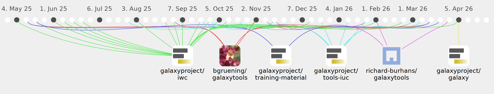

Delphine-L

Commits all-time: 351
Commits last year: 163

(149)
- 16dc5ed
- 10133dc
- 4e0a324
- e144e23
- a3edbc2
- b4a2c2e
- 5945010
- f76b0bb
- 020c2e3
- 80f5e84
- 9a5bef9
- 3d7038a
- d5a35b4
- fde80ed
- a950039
- 2243543
- a7d853e
- fe483b5
- 7c616c4
- 76e4717
- e01d605
- 0fe8c46
- d74e852
- 6896920
- 92a0595
- 49423a0
- 0e54033
- 650e853
- 51bf602
- bfee856
- 4ab23c8
- 6ba6934
- 2ae52d9
- 06110ef
- 95046cb
- 7b13b3b
- b921103
- 149879f
- d5c7d8c
- ca924de
- a2e3ec7
- c80b653
- 1b9003a
- e637ec1
- acc042a
- 52c96ef
- b57027d
- 376b53f
- 711a2eb
- 6b46512
- d223650
- c96e8b4
- 45e8904
- 2856747
- 2123247
- fa04a84
- e1bdf60
- 6a5e71c
- 9a6f31c
- 59e7268
- c7d8f59
- e59eb0e
- 8f3c047
- 2e6d095
- c713a7a
- f33c5bd
- 3030f3b
- 502d423
- 143a808
- 1d7ff93
- add30b8
- 06c6a2f
- 1516a2b
- 91a3562
- 03a56b7
- 73904a0
- b31a869
- 1bccfd7
- 6679bf0
- 1fabe18
- 9109b76
- 4c1dc2e
- 4efd220
- c868539
- 57bdb5e
- 62f6d5d
- 65462cb
- f487762
- 7e47d8d
- 5089f15
- 18799e0
- 202ebe5
- 7534bac
- 5d08d01
- d7c8569
- 35f8c88
- 2bc4601
- 02d0d95
- 3bffd65
- 9413ae6
- 782bec2
- 3bfb719
- 827bbf8
- 98a2c75
- 8def963
- e673bbf
- 885a108
- 105f826
- bea48e0
- 19805af
- b8312a3
- 0440dba
- a848ed0
- 2ddd529
- 1b2d01a
- a3a42ce
- 6905bac
- 8d04687
- f09abe7
- c6043cd
- 94ca7ba
- 5f779b0
- 1ae7cb4
- 84678e6
- 751b1bd
- 92215ad
- e1f91fe
- e71a118
- 18fc316
- 18f2873
- d5f2e11
- 0d94d1c
- b0f3a65
- 379faa1
- 7d6c96f
- 10d9a61
- 6138c6f
- 4142b48
- 78cca49
- 6b75b04
- 3f711cf
- 73da790
- a9b870e
- b8d6636
- 085f1c0
- fc03715
- d7dae48
- 194814f
- 0670984
(11)
(3)